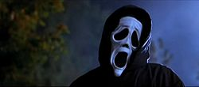

A Horrorra akadva, avagy tudom, kit ettél tavaly nyárson (Scary Movie) egy 2000-es horrorparódia. A Wayans-fivérek filmje a Péntek 13, a Halloween, a Sikoly, a Sikoly 2., a Tudom, mit tettél tavaly nyáron, a Még mindig tudom, mit tettél tavaly nyáron, a Rémálom az Elm utcában, a Mátrix és az Ideglelés című filmeket figurázza ki. A filmnek négy folytatása készült.
A történet kezdetén megölnek egy gyönyörű diáklányt, Drew Deckert. A hat jó barát, Cindy, Bobby, Buffy, Ray, Brenda és Greg soha nem felejti el, hogy egy szörnyű Halloween-éjszakán figyelmetlenségből elgázoltak egy járókelőt. Halálos bűnüket egészen egy éven keresztül sikerül eltitkolniuk, ám ekkor váratlanul lesújt rájuk az ítélet: az addig halottnak hitt áldozat visszatér, hogy elégtételt vegyen, egyesítve magában az összes stílusos kegyetlenséget. Ráadásul a média is üldözi őket egy kotnyeles riporternő, Gail (Cheri Oteri) személyében.
| Év | Díj | Kategória | Jelölt | Eredmény |
|---|---|---|---|---|
| 2001 | BMI Film Music Award | David Kitay | Elnyerte | |
| Blockbuster Entertainment Award | Kedvenc női mellékszereplő – vígjáték | Cheri Oteri | Elnyerte | |
| Kedvenc színész – Vígjáték | Marlon Wayans | Jelölve | ||
| Kedvenc színész – Vígjáték | Shawn Wayans | |||
| MTV Movie Award | Legjobb Cameo | James Van Der Beek | Elnyerte | |
| Legjobb csók | Jon Abrahams Anna Faris |
Jelölve | ||
| Áttörő női alakítás | Anna Faris | |||
| Gold Reel Award | Miramax Films | Elnyerte | ||
| Taurus Award | Legjobb munka | Leslie McMichael Yves Cameron |
Jelölve | |
| 2000 | Bogey Award in Silver | Highlight (gyártó) | Elnyerte | |
| Golden Screen | Highlight (gyártó) | Elnyerte | ||
| Teen Choice Award | A nyár legjobb filmje | Elnyerte |